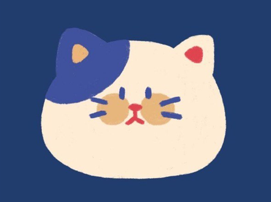

Khaeeja Mustafa

SUMMERY
Aspiring Developer in the learning phase,
eager to absorb knowledge and apply coding principles to real-world projects.
Currently gaining proficiency in [Web devploment (HTML, CSS, ETC...)],
I am enthusiastic about honing my problem-solving abilities and collaborating effectively within development teams.
With a strong commitment to continuous learning,
I am excited to contribute my evolving skills to meaningful projects and grow as a valuable team member."
EDUCATION
- Bachelor degree, University of Baghdad, College of
Engineering, Electronics and Communication Department.
2018 - 2022
EXPERINCES
Microsoft office
- Word
- PowerPoint
- Excel
- Outlook
Programming language
Languages
Other software
- Bucket tracer
- CST Studio suit
- Adobe muse
- Adobe InDesign
- Adobe illustrator
WORK EXPERINCES
-
O&M Coordinator at BEECABLE.
Full Time, Nov 2022
Skills
- Data Analysis ⭐️⭐️⭐️⭐️⭐️
- Problem Solving ⭐️⭐️⭐️⭐️
- Manegment ⭐️⭐️⭐️⭐️⭐️
- Social Service ⭐️⭐️⭐️⭐️
ACTIVITIES AND PROJECTS
- Activities
-
Participate at TATWEER Program – Self Marketing.
- Participate in the annual projects’ exhibition of
University of Baghdad
- Projects
- Hazardous gas leakage detection and alert
system for domestic application using GSM.
- Filter designer program using C++
Other